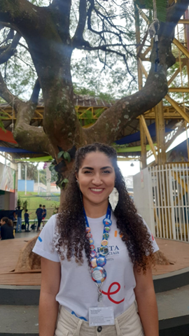

RESUMO SERVIÇO SOCIAL

O profissional Assistente Social é um profissional habilitado para realizar escuta e acolhimento dos sujeitos, mediações necessárias, leituras dos contextos culturais e socioeconômicos, totalmente desvinculado de juízos de valores, se posicionando em favor da equidade social, da luta dos movimentos sociais populares, da democracia, na garantia da qualidade dos serviços prestados à população e da superação das dominações de classe, raça e gênero em busca de uma sociedade antirracista e equânime.
Sua formação é em Serviço Social, uma área de conhecimento e de intervenção, pautada em valores éticos que visam a defesa dos direitos sociais para todas as pessoas. Essa profissão busca compreender a realidade dos sujeitos para auxiliá-los numa perspectiva de integralidade e totalidade. Seu objetivo é atuar no enfrentamento às desigualdades mediante a facilitação do acesso às políticas sociais, econômicas, ambientais e culturais.
Seu campo de atuação se dá nas mais diversas áreas, tanto do setor público quanto do privado. No Marista Escola Social Ir. Acácio, a dupla de Assistentes Sociais atuam no acompanhamento dos estudantes, educandos famílias inseridas no Serviço de Convivência e Fortalecimento de Vínculos e Educação nível Médio e Fundamental Anos Finais. Nossa atuação visa colaborar com a permanência destes nos serviços, bem como auxiliar com as demandas identificadas e com o acesso aos demais serviços e políticas públicas disponíveis, contribuindo também no processo formativo de professores, educadores e demais colaboradores, objetivando a sensibilização quanto às temáticas de defesa da criança e adolescente, promovendo, assim, uma cultura escolar pautada na defesa dos direitos humanos livre de quaisquer preconceitos e discriminações.
Data da Publicação: setembro de 2023
Por Isadora Souza De Paula